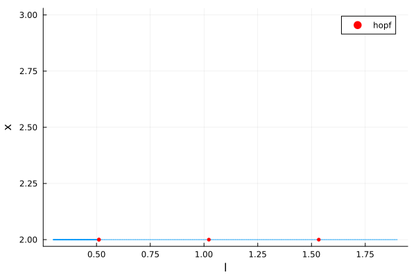
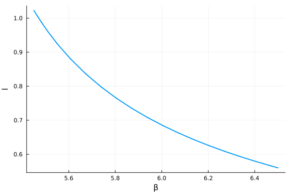
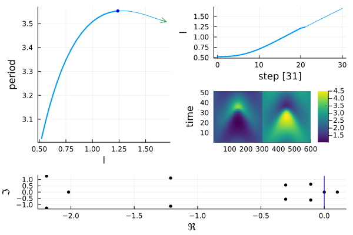
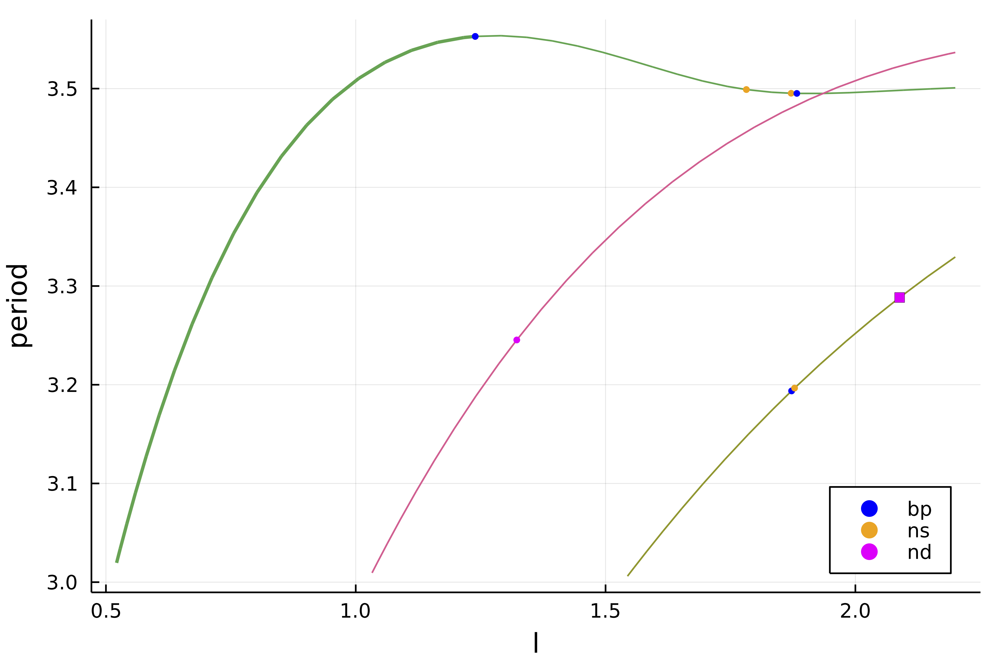
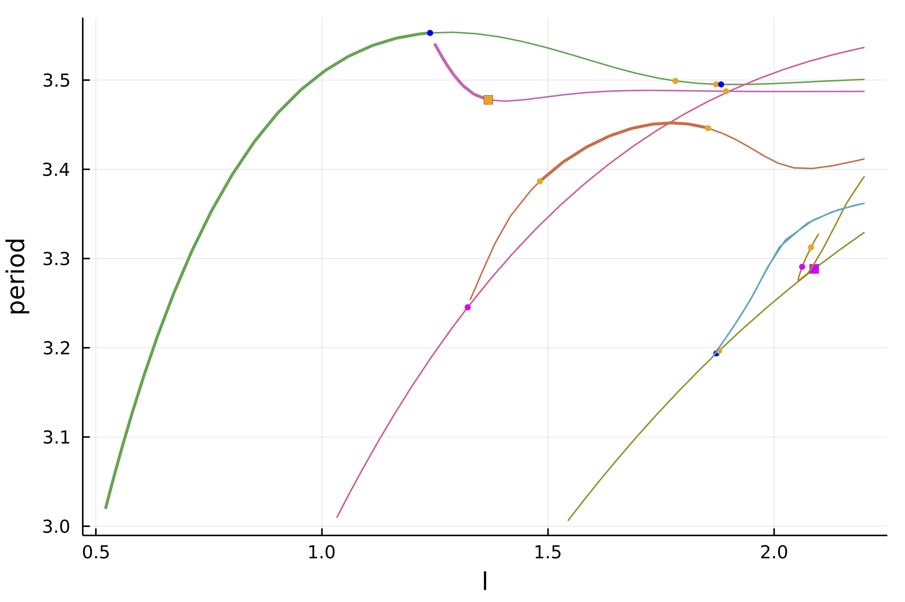
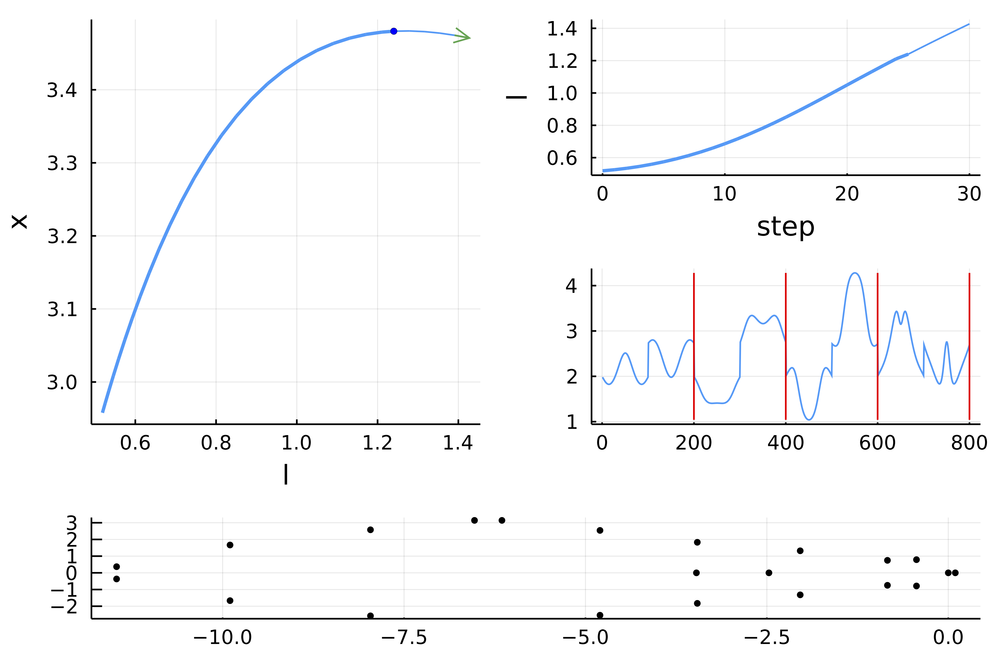
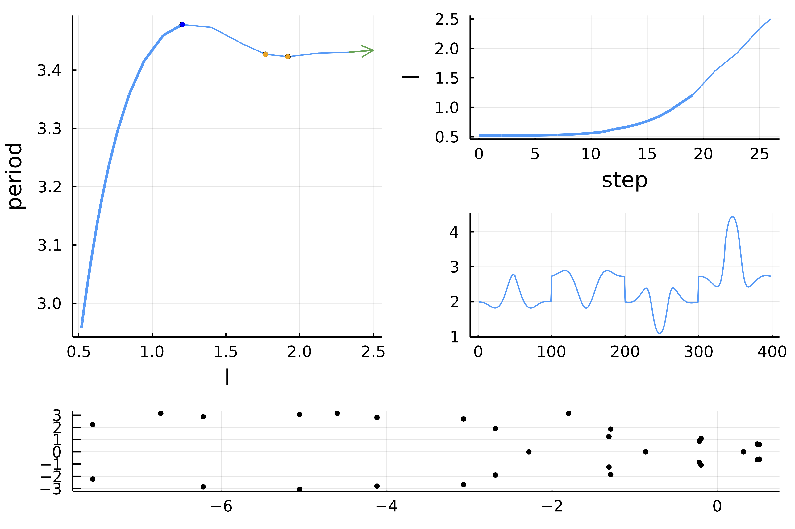

🟡 1d Brusselator (automatic)
We look at the Brusselator in 1d (see [Lust]). The equations are
\[\begin{aligned} \frac { \partial X } { \partial t } & = \frac { D _ { 1 } } { l ^ { 2 } } \frac { \partial ^ { 2 } X } { \partial z ^ { 2 } } + X ^ { 2 } Y - ( β + 1 ) X + α \\ \frac { \partial Y } { \partial t } & = \frac { D _ { 2 } } { l ^ { 2 } } \frac { \partial ^ { 2 } Y } { \partial z ^ { 2 } } + β X - X ^ { 2 } Y \end{aligned}\]
with Dirichlet boundary conditions
\[\begin{array} { l } { X ( t , z = 0 ) = X ( t , z = 1 ) = α } \\ { Y ( t , z = 0 ) = Y ( t , z = 1 ) = β / α. } \end{array}\]
These equations have been introduced to reproduce an oscillating chemical reaction. There is an obvious equilibrium $(α, β / α)$. Here, we consider bifurcations with respect to the parameter $l$.
We start by writing the PDE
using Reviseusing BifurcationKit, Plots, SparseArraysconst BK = BifurcationKitf1(u, v) = u * u * vfunction Fbru!(f, x, p, t = 0) (;α, β, D1, D2, l) = p n = div(length(x), 2) h2 = 1.0 / n^2 c1 = D1 / l^2 / h2 c2 = D2 / l^2 / h2 u = @view x[1:n] v = @view x[n+1:2n] # Dirichlet boundary conditions f[1] = c1 * (α - 2u[1] + u[2] ) + α - (β + 1) * u[1] + f1(u[1], v[1]) f[end] = c2 * (v[n-1] - 2v[n] + β / α) + β * u[n] - f1(u[n], v[n]) f[n] = c1 * (u[n-1] - 2u[n] + α ) + α - (β + 1) * u[n] + f1(u[n], v[n]) f[n+1] = c2 * (β / α - 2v[1] + v[2]) + β * u[1] - f1(u[1], v[1]) for i=2:n-1 f[i] = c1 * (u[i-1] - 2u[i] + u[i+1]) + α - (β + 1) * u[i] + f1(u[i], v[i]) f[n+i] = c2 * (v[i-1] - 2v[i] + v[i+1]) + β * u[i] - f1(u[i], v[i]) end return fendWe use a sparse representation of the jacobian:
function Jbru_sp(x, p) (;α, β, D1, D2, l) = p # compute the Jacobian using a sparse representation n = div(length(x), 2) h = 1.0 / n; h2 = h*h c1 = D1 / p.l^2 / h2 c2 = D2 / p.l^2 / h2 u = @view x[1:n] v = @view x[n+1:2n] diag = zeros(eltype(x), 2n) diagp1 = zeros(eltype(x), 2n-1) diagm1 = zeros(eltype(x), 2n-1) diagpn = zeros(eltype(x), n) diagmn = zeros(eltype(x), n) @. diagmn = β - 2 * u * v @. diagm1[1:n-1] = c1 @. diagm1[n+1:end] = c2 @. diag[1:n] = -2c1 - (β + 1) + 2 * u * v @. diag[n+1:2n] = -2c2 - u * u @. diagp1[1:n-1] = c1 @. diagp1[n+1:end] = c2 @. diagpn = u * u return spdiagm(0 => diag, 1 => diagp1, -1 => diagm1, n => diagpn, -n => diagmn)endWe shall now compute the equilibria and their stability.
n = 300# parameters of the Brusselator model and guess for the stationary solutionpar_bru = (α = 2., β = 5.45, D1 = 0.008, D2 = 0.004, l = 0.3)sol0 = vcat(par_bru.α * ones(n), par_bru.β/par_bru.α * ones(n))# bifurcation problemprobBif = BK.BifurcationProblem(Fbru!, sol0, par_bru, (@optic _.l); J = Jbru_sp, plot_solution = (x, p; kwargs...) -> (plotsol(x; label="", kwargs... )), record_from_solution = (x, p; k...) -> x[div(n,2)])For the eigensolver, we use a Shift-Invert algorithm (see Eigen solvers (Eig)) even though for this discretization size, the default eigensolver DefaultEig would suffice.
eigls = EigArpack(1.1, :LM)We continue the trivial equilibrium to find the Hopf points
opt_newton = NewtonPar(eigsolver = eigls, tol = 1e-9)opts_br_eq = ContinuationPar(dsmin = 0.001, dsmax = 0.01, ds = 0.001, p_max = 1.9, nev = 21, newton_options = opt_newton, max_steps = 1000, # specific options for precise localization of Hopf points n_inversion = 6)br = continuation(probBif, PALC(), opts_br_eq, normC = norminf) ┌─ Curve type: EquilibriumCont
├─ Number of points: 120
├─ Type of vectors: Vector{Float64}
├─ Parameter l starts at 0.3, ends at 1.9
├─ Algo: PALC [Secant]
└─ Special points:
- # 1, hopf at l ≈ +0.51133101 ∈ (+0.51130339, +0.51133101), |δp|=3e-05, [converged], δ = ( 2, 2), step = 19
- # 2, hopf at l ≈ +1.02261272 ∈ (+1.02260927, +1.02261272), |δp|=3e-06, [converged], δ = ( 2, 2), step = 56
- # 3, hopf at l ≈ +1.53388402 ∈ (+1.53388396, +1.53388402), |δp|=5e-08, [converged], δ = ( 2, 2), step = 93
- # 4, endpoint at l ≈ +1.90000000, step = 119
We obtain the following branch with 3 Hopf bifurcation points
scene = plot(br)
Normal form computation
We can compute the normal form of the Hopf points as follows
hopfpt = get_normal_form(br, 1)SuperCritical - Hopf bifurcation point at l ≈ 0.5113310149554013.
Frequency ω ≈ 2.1394991675560133
Period of the periodic orbit ≈ 2.9367552006841753
Normal form z⋅(iω + a⋅δl + b⋅|z|²):
┌─ a = 0.879994619615158 + 0.5689771265351282im
└─ b = -0.0015608102901474314 + 0.001563481097008629im
Continuation of Hopf points
We use the guesses of the bifurcation points located in br.specialpoint to turn them into precise bifurcation points. For the second one, we have
# index of the Hopf point in br.specialpointind_hopf = 2# newton iterations to compute the Hopf pointhopfpoint = newton(br, ind_hopf; normN = norminf)BK.converged(hopfpoint) && printstyled(color=:red, "--> We found a Hopf Point at l = ", hopfpoint.u.p[1], ", ω = ", hopfpoint.u.p[2], ", from l = ", br.specialpoint[ind_hopf].param, "\n")--> We found a Hopf Point at l = 1.0226125272127924, ω = -2.1395092895298546, from l = 1.022612721393132We now perform a Hopf continuation with respect to the parameters l, β
optcdim2 = ContinuationPar(dsmin = 0.001, dsmax = 0.05, ds= 0.01, p_max = 6.5, p_min = 0.0, newton_options = opt_newton, detect_bifurcation = 0)br_hopf = continuation(br, ind_hopf, (@optic _.β), optcdim2, verbosity = 2, # detection of codim 2 bifurcations with bisection detect_codim2_bifurcation = 2, # we update the Hopf problem at every continuation step update_minaug_every_step = 1, jacobian_ma = BK.MinAug(), # specific to large dimensions normC = norminf, )scene = plot(br_hopf)
Computation of the branch of periodic orbits (Finite differences)
We now compute the bifurcated branches of periodic solutions from the Hopf points using Periodic orbits based on Trapezoidal rule. One has just to pass a Trapeze.
We start by providing a linear solver and some options for the continuation to work
# automatic branch switching from Hopf pointopt_po = NewtonPar(tol = 1e-10, verbose = true, max_iterations = 15)opts_po_cont = ContinuationPar(dsmin = 0.001, dsmax = 0.04, ds = 0.01, p_max = 2.2, max_steps = 30, newton_options = opt_po, plot_every_step = 1, nev = 11, tol_stability = 1e-6, )# number of time slices for the periodic orbitM = 51probFD = Trapeze(M = M; # specific method for solving the linear system for newton # of periodic orbits with trapeze method. # We could use the default one FullLU() (slower here) jacobian = BK.BorderedSparseInplace())br_po = continuation( # arguments for branch switching from the first # Hopf bifurcation point br, 1, # arguments for continuation opts_po_cont, probFD; # regular options for continuation verbosity = 3, plot = true, plot_solution = (x, p; kwargs...) -> heatmap!(reshape(x[1:end-1], 2*n, M)'; ylabel="time", color=:viridis, kwargs...), normC = norminf)Scene = title!("")
Using the above call, it is very easy to find the first branches:

We note that there are several branch points (blue points) on the above diagram. This means that there are additional branches in the neighborhood of these points. We now turn to automatic branch switching on these branches.
Let's say that we want to branch from the first branch point of the first curve pink branch. The syntax is very similar to the previous one:
br_po2 = continuation( # arguments for branch switching br_po, 1, # arguments for continuation opts_po_cont; ampfactor = 1., δp = 0.01, verbosity = 3, plot = true, plot_solution = (x, p; kwargs...) -> heatmap!(reshape(x[1:end-1], 2*n, M)'; ylabel="time", color=:viridis, kwargs...), normC = norminf)It is now straightforward to get the following diagram

Computation of the branch of periodic orbits (Standard Shooting)
Note that what follows is not really optimized on the
DifferentialEquations.jlside. Indeed, we do not use automatic differentiation, we do not pass the sparsity pattern, ...
We now turn to a different method based on the flow of the Brusselator. To compute this flow (time stepper), we need to be able to solve the differential equation (actually a PDE) associated to the vector field Fbru. We show how to do this with an implicit method Rodas4P from DifferentialEquations.jl. Note that the user can pass its own time stepper but for convenience, we use the ones in DifferentialEquations.jl. More information regarding the shooting method is contained in Periodic orbits based on the shooting method.
We then recompute the locus of the Hopf bifurcation points using the same method as above.
n = 100# different parameters to define the Brusselator model and guess for the stationary solutionpar_bru = (α = 2., β = 5.45, D1 = 0.008, D2 = 0.004, l = 0.3)sol0 = vcat(par_bru.α * ones(n), par_bru.β/par_bru.α * ones(n))probBif = re_make(probBif, u0 = sol0)eigls = EigArpack(1.1, :LM)opts_br_eq = ContinuationPar(dsmin = 0.001, dsmax = 0.00615, ds = 0.0061, p_max = 1.9, nev = 21, plot_every_step = 50, newton_options = NewtonPar(eigsolver = eigls, tol = 1e-9), max_steps = 200)br = continuation(probBif, PALC(), opts_br_eq, normC = norminf)We need to build a problem which encodes the Shooting functional. This done as follows where we first create the time stepper:
using OrdinaryDiffEqFOde(f, x, p, t) = Fbru!(f, x, p, t)u0 = sol0 .+ 0.01 .* rand(2n)# we pass our jacobian function to increase performances# an inplace jacobian would be favouredvf = ODEFunction(FOde, jac = (J,u,p,t) -> J .= Jbru_sp(u, p), jac_prototype = Jbru_sp(u0, par_bru))# this is the ODE time stepper when used with `solve`prob_ode = ODEProblem(vf, u0, (0., 1000.), par_bru; abstol = 1e-10, reltol = 1e-8)You can really speed this up by using the improved ODEProblem
using SparseDiffTools, SparseArraysjac_prototype = Jbru_sp(ones(2n), par_bru)jac_prototype.nzval .= ones(length(jac_prototype.nzval))_colors = matrix_colors(jac_prototype)vf = ODEFunction(FOde; jac_prototype = jac_prototype, colorvec = _colors)prob_ode = ODEProblem(vf, u0, (0.0, 520.), par_bru) # gives 0.22sWe are now ready to call the automatic branch switching. Note how similar it is to the previous section based on finite differences. This case is more deeply studied in the tutorial 1d Brusselator (advanced user).
# linear solversls = GMRESIterativeSolvers(reltol = 1e-7, maxiter = 100)eig = EigKrylovKit(tol= 1e-12, x₀ = rand(2n), dim = 40)# newton parametersoptn_po = NewtonPar(verbose = true, tol = 1e-7, linsolver = ls, eigsolver = eig)# continuation parametersopts_po_cont = ContinuationPar(dsmax = 0.03, ds = 0.01, p_max = 2.5, max_steps = 10, newton_options = optn_po, nev = 15, tol_stability = 1e-3, plot_every_step = 2)Mt = 2 # number of shooting sectionsbr_po = continuation( br, 1, # arguments for continuation opts_po_cont, # this is where we tell that we want Parallel Standard Shooting Shooting(Mt, prob_ode, Rodas4P(), parallel = true, jacobian = BK.FiniteDifferencesMF()); # the next option is not necessary # it speeds up the newton iterations # by combining the linear solves of the bordered linear system linear_algo = MatrixFreeBLS(@set ls.N = 2+2n*Mt), verbosity = 3, plot = true, plot_solution = (x, p; kwargs...) -> BK.plot_periodic_shooting!(x[1:end-1], Mt; kwargs...), normC = norminf)and you should see

Computation of the branch of periodic orbits (Poincaré Shooting)
We now turn to another Shooting method, namely the Poincaré one. We can provide this method thanks to the unique functionalities of DifferentialEquations.jl. More information is provided at PoincareShooting and Periodic orbits based on the shooting method but basically, it is a shooting method between Poincaré sections $\Sigma_i$ (along the orbit) defined by hyperplanes. As a consequence, the dimension of the unknowns is $M_{sh}\cdot(N-1)$ where $N$ is the dimension of the phase space. Indeed, each time slice lives in an hyperplane $\Sigma_i$. Additionally, the period $T$ is not an unknown of the method but rather a by-product. However, the method requires the time stepper to find when the flow hits an hyperplane $\Sigma_i$, something called event detection.
We show how to use this method, the code is very similar to the case of the Parallel Standard Shooting:
# linear solversls = GMRESIterativeSolvers(reltol = 1e-8, maxiter = 100)eig = EigKrylovKit(tol= 1e-12, x₀ = rand(2n-1), dim = 50)# newton parametersoptn_po = NewtonPar(verbose = true, tol = 1e-7, linsolver = ls, eigsolver = eig)# continuation parametersopts_po_cont = ContinuationPar(dsmax = 0.03, ds = 0.005, p_max = 2.5, newton_options = optn_po, nev = 10, tol_stability = 1e-5, plot_every_step = 2)# number of time slicesMt = 2br_po = continuation( br, 1, # arguments for continuation opts_po_cont, PoincareShooting(Mt, prob_ode, Rodas4P(); jacobian = BK.FiniteDifferencesMF(), update_section_every_step = 0); # the next option is not necessary # it speeds up the newton iterations # by combining the linear solves of the bordered linear system linear_algo = MatrixFreeBLS(@set ls.N = (2n-1)*Mt+1), verbosity = 3, plot = true, plot_solution = (x, p; kwargs...) -> BK.plot_periodic_shooting!(x[1:end-1], Mt; kwargs...), normC = norminf)and you should see:

References
- Lust
Numerical Bifurcation Analysis of Periodic Solutions of Partial Differential Equations, Lust, 1997.